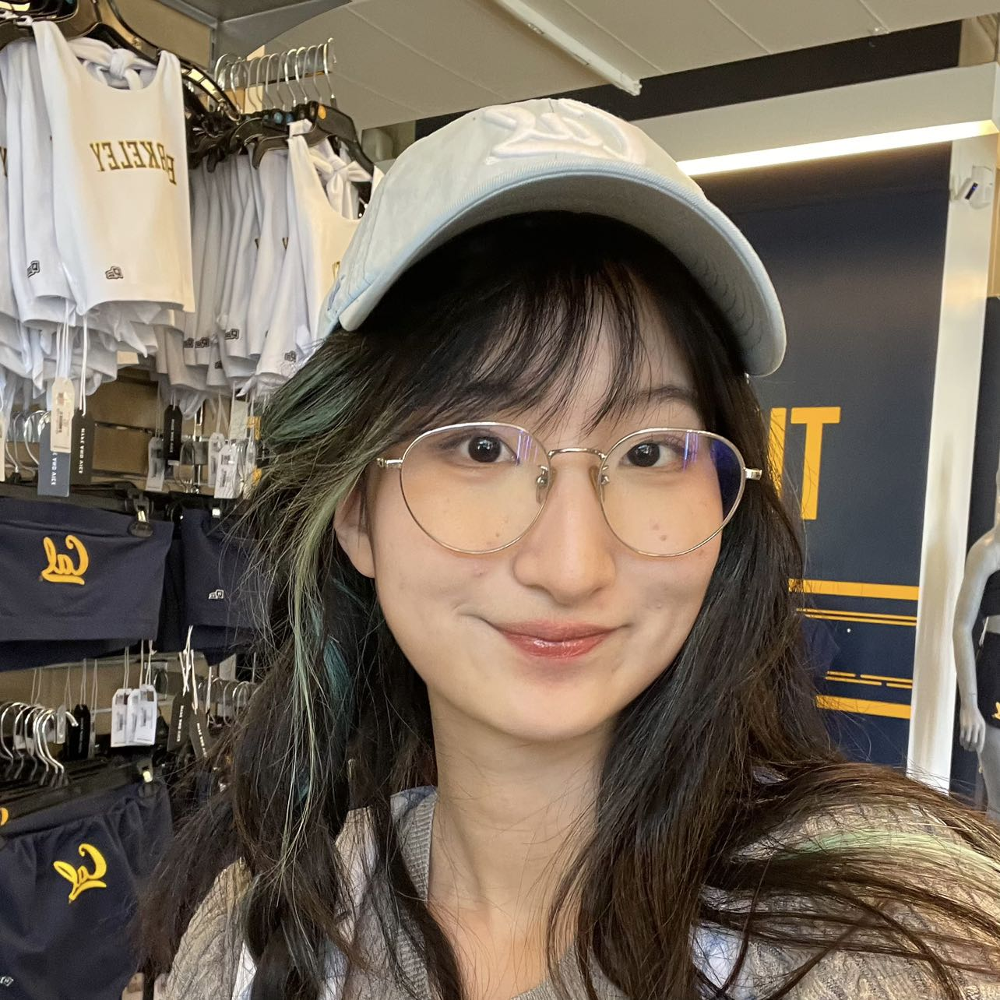
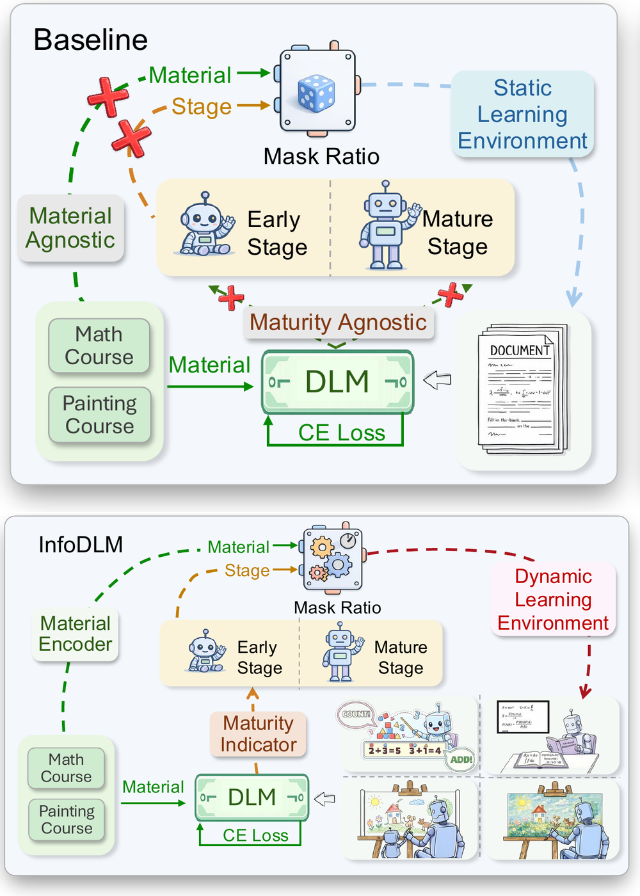
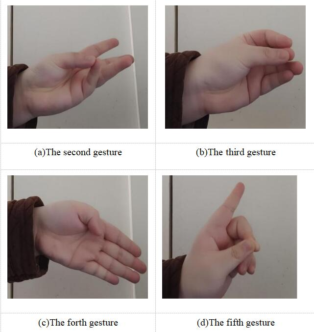
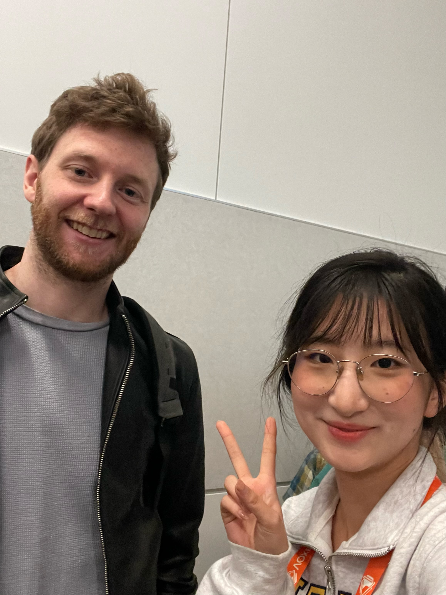
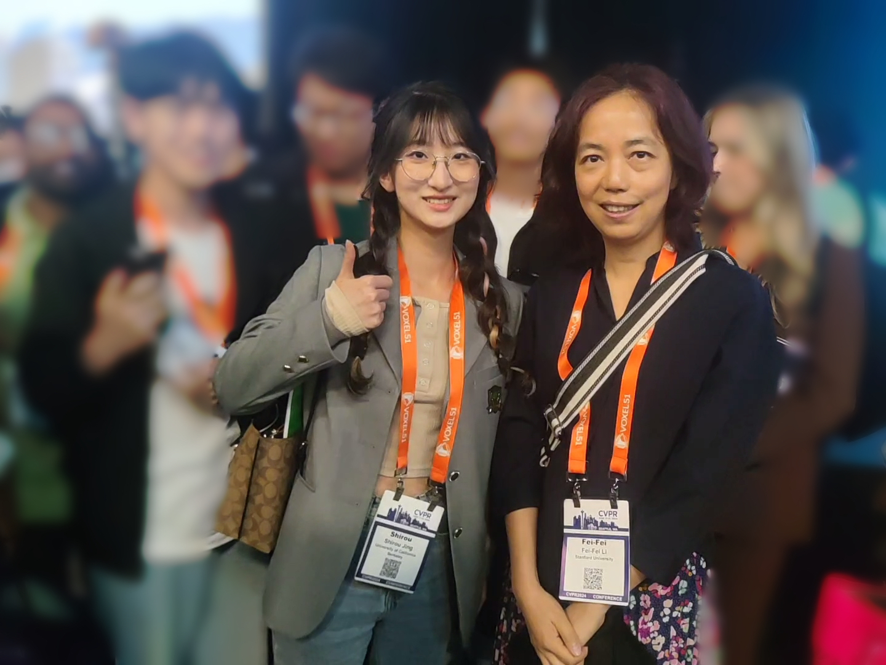
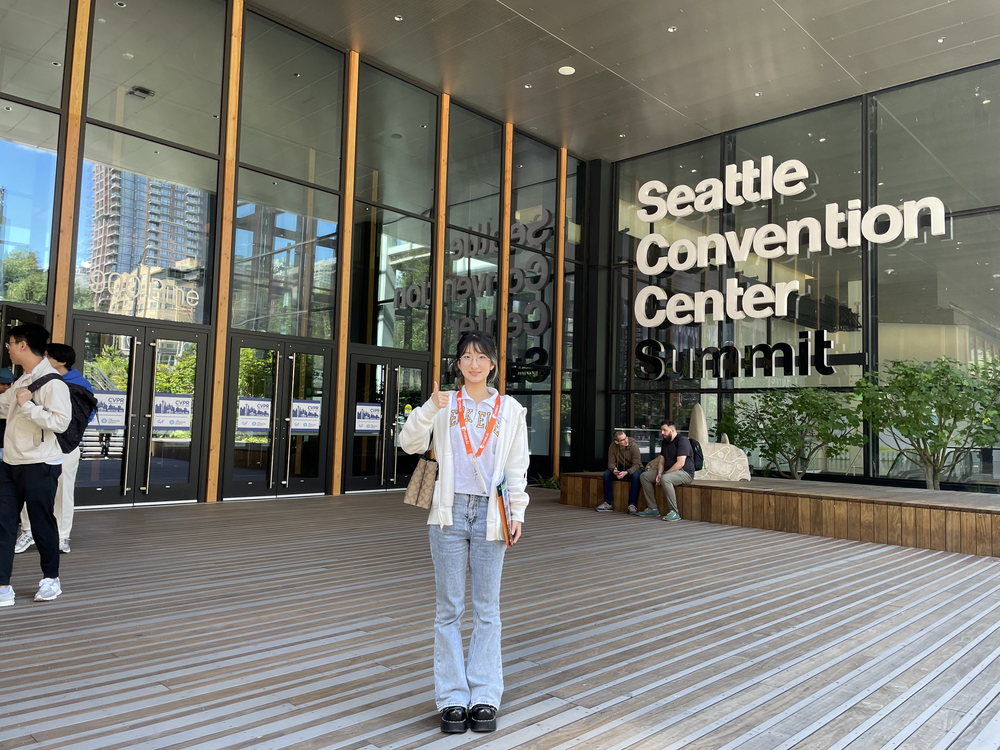

|
Shirou Jing
I am a first-year Ph.D. student in Electrical & Computer Engineering at
Rice University,
advised by Prof. Tony (Tong) Geng.
I received my B.S. in Computer Science from the
University of Chinese Academy of Sciences (UCAS).
Before Rice, I worked on generative / diffusion models (controllable image & video
generation) at UCAS with Dr. Zhenliang He and
Prof. Shiguang Shan, and interned at UC Berkeley's
ABC Lab (Betzig lab) on AI for microscopy imaging.
My research focuses on information-efficient, maturity-aware pretraining of language models
— designing dynamic learning tasks so that models begin to acquire reasoning capability from the
pretraining stage — and on multi-agent LLM systems.
Email /
CV /
LinkedIn /
GitHub
|

|
News
- 2026
🎉 InfoDLM was accepted to ICML 2026.
- 2026
RCS (multi-agent LLM systems) was submitted to NeurIPS 2026.
- 2025
Started my Ph.D. at Rice University (ECE), advised by Prof. Tony Geng.
- 2024
GIGT was accepted to IPCV 2024.
Selected Publications
|

|
InfoDLM: an Information-Adaptive Framework for Discrete Diffusion Language Model Pretraining
Shirou Jing, Chunshu Wu, Chuan Liu, Arghavan Bahadorinejad, Feitong Qiao, Dongfang Liu, Tony Geng
ICML 2026
OpenReview /
PDF
InfoDLM replaces the heuristic random masking in diffusion-LM pretraining with an
information-gain–driven mask policy (a trainable IG signal + maturity-aware masking,
jointly trained with the model). With ~7.6% FLOPs overhead, it improves reasoning accuracy
by up to 13% over LLaDA-472M at a comparable budget.
|
|
Learning with Noisy Labels via Mamba and Entropy KNN Framework
Ningwei Wang, Weiqiang Jin, Shirou Jing, Haixia Bi, Guang Yang
Applied Soft Computing, 2025
/
paper
RelabelMamba: a learning-with-noisy-labels framework with a bidirectional state-space
(Mamba) backbone for global, linear-complexity representations; entropy–variance + KNN
relabeling (AEKR) to correct mislabeled samples; and a variance-aware mixup (Adaptpuzzle).
Competitive on CIFAR-10/100, Clothing1M, and ANIMAL-10N.
|
|
Diffusion-Based Generative Self-Supervised Model for Few-Shot PolSAR Image Classification
Kang Liu, Zuzheng Kuang, Shirou Jing, Haixia Bi, Yaochen Li, Chen Xu
IGARSS 2024
/
IEEE Xplore
A diffusion-based generative self-supervised model that learns discriminative, robust
polarimetric representations without annotations via a noise-adding / denoising process,
improving few-shot PolSAR image classification.
|
|

|
GIGT: Gesture-Recognition-Integrated Game Therapy for Tenosynovitis
Shirou Jing, Xuejin Wu, Wei Sun
IPCV 2024
project page /
arXiv
An interactive game for tenosynovitis prevention: deep-learning hand-gesture recognition drives
customizable tendon-sheath exercises through an engaging interface.
|
Preprints & In Submission
|
RCS: Rhythm-Controlled Communication for Multi-Agent LLM Systems
Submitted to NeurIPS 2026
Reformulates communication in multi-agent LLM systems from fixed, top-down turn-taking into a
learned, self-adaptive communication rhythm — coordinating when agents
contribute, not just what — reaching debate-level accuracy at a fraction of the
communication cost.
|
|
CtrLoRA-XL: Cost-efficient, High-fidelity Multi-condition Controllable Image Generation on Stable Diffusion XL
With Dr. Zhenliang He and Prof. Shiguang Shan
Submitted to IJCV
A cost-efficient, high-fidelity framework for multi-condition controllable image generation on
SDXL, cutting GPU and training-image requirements by over 99% for adapting to novel conditions
while preserving fidelity.
|
More about me — earlier background & PhD-application materials
(Kept for reference — this is the longer research-journey narrative and photos from my PhD-application period.)
Research Journey
My research journey has been driven by leveraging computer science and AI to build solutions that
intersect with human needs — from early inspirations in science literature to hands-on work in
startups and research institutions, exploring generative models, human–computer interaction, and
practical applications of AI.
My fascination with science began in childhood (books like Horrible Science and Horrible Maths),
grew during a six-month visit to OSU where I built a toy rocket, and sharpened in high school through
informatics competitions (provincial first prize). At university I built a foundation in math and physics,
which proved pivotal during a summer internship at ZhenTec Intelligence, a startup incubated by Xi'an Jiaotong
University, where I worked on brain–machine rehabilitation robots.
My interests later expanded to lip-reading recognition, video-forgery detection, and radar image processing.
At Xi'an Jiaotong University, with Prof. Haixia Bi, I worked on classifying Polarimetric SAR images using
diffusion models (published at IGARSS 2024). Motivated by tenosynovitis among lab mates, I collaborated with
Prof. Feng Tian and Prof. Wei Sun on a game-based rehabilitation solution (a patent application and the GIGT
paper at IPCV). My interest in generative models deepened during collaboration with Prof. Shiguang Shan and
Dr. Zhenliang He at the Institute of Computing Technology, supported by RMB 67,000 from China's first open
grant project for undergraduates.
An exchange visit to UC Berkeley (interning at the ABC lab, founded by
Eric Betzig) further refined my trajectory, working on AI-driven microscopy image analysis and reinforcing
my commitment to advanced study in AI.



Last updated Jul 2026. Template adapted from Jon Barron.
|
{kind=link}
{kind=link}